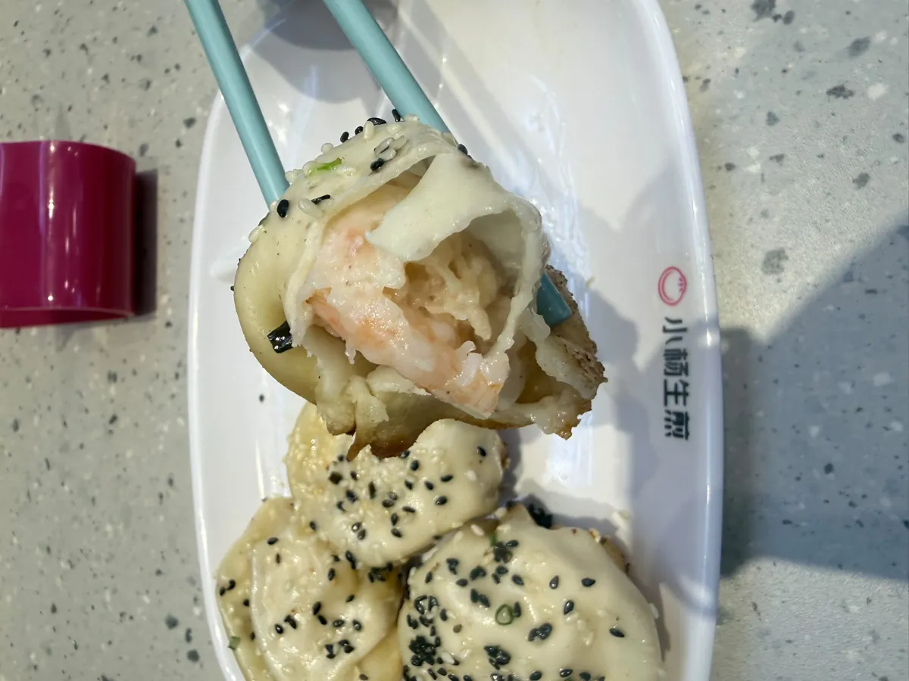
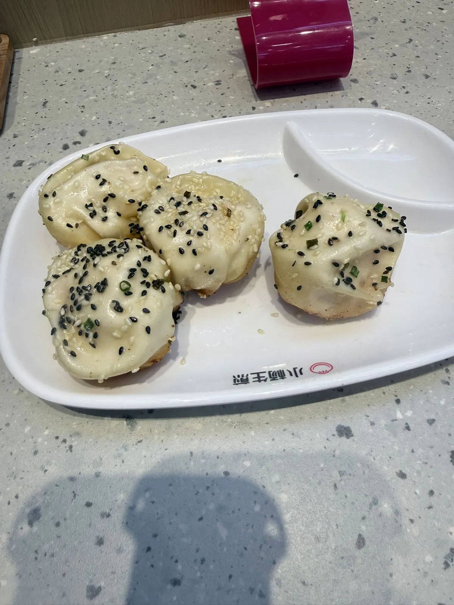
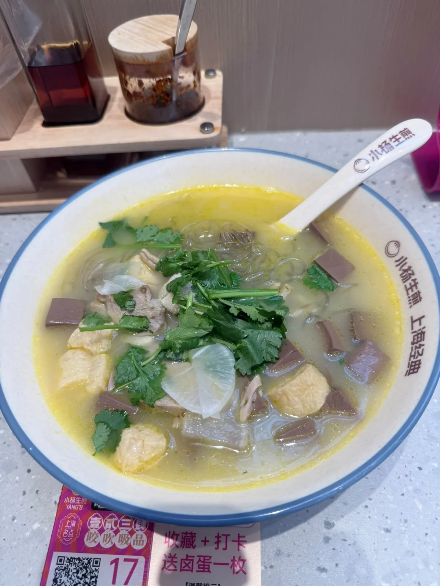

小楊生煎（深圳坪山益田店）：團購蝦生煎套餐 ¥33.9
深圳坪山一間商場食街入面嘅小楊生煎。用咗張團購券，原價 ¥34.9、實付 ¥33.9，食咗大蝦生煎同老鴨粉絲湯，自費。一句總結：外皮同爆汁做得好，但蝦肉嘅鮮度輸咗畀預期，而粉絲湯嘅份量一個人食唔完。下面拆開講，順便對一對「人均 ¥24」、券面 ¥34.9、實付 ¥33.9 呢三個數點解冇一個係「你會俾幾多」。
食咗咩，同幾多錢
當日紀錄
到訪日期：
點咗咩：
實付：
券面原價：
券嘅條款：
營業時間：
地址同點去：
過關之後想即刻有數據、唔使換實體卡，可以睇 。 ⚠️ 呢條係 Klook 上網卡嘅總表，入面搵「中國」就係。連分類頁唔連單一產品頁，係因為單一產品下架會變 404，分類頁唔會。本站部分連結為推廣連結，經此類連結消費本站可能獲得佣金，價格不受影響。
到訪日期只寫到「2026 年 9 月」，冇寫確實邊一日 —— 因為當日冇記低，而本站唔會補一個似層層嘅日子上去。資料塊入面嗰條 entry 自己都寫明係月份粒度，可以核對嘅只有券面嗰個到期日。
價錢、榜單同人流呢啲嘢會變，所以佢哋抽咗出嚟獨立標明核實月份 —— 實食紀錄呢個分區嘅硬規則之一。正文只留唔會變嗰部分。同區另外兩篇快餐紀錄：華強北泰仔船面、西麗小越山老友粉。

大蝦生煎：外皮贏，蝦肉輸
外皮係佢嘅本事。煎得金黃酥脆，底部有焦香，咬落去會噴汁 —— 要小心燙口，唔好一啖過。呢一部分做得好，亦係最後令人回味嗰樣。
但蝦肉嗰邊有保留。蝦肉餡有先醃製過，調味偏重；可能就係因為醃製嘅關係，蝦肉本身嘅鮮度冇想像中咁突出。口感反而似小籠包嗰種紮實綿密，少咗蝦應該有嘅彈牙爽脆感。整體味道 OK，配醋同薑絲食好滿足，但如果你係衝住「大蝦」兩個字去，要先知道呢一點。

老鴨粉絲湯：份量先係問題

湯頭微微帶辣，酸蘿蔔開胃，鴨肉唔少。問題唔喺味道，喺份量：粉絲太多。以一人份嚟講，一般人好難全部食完，最後剩低唔少，覺得可惜。
味道中規中矩，唔會雷，但主力應該放喺生煎包 —— 呢碗湯嘅角色係配角，唔值得為咗食完佢而勉強。
三個價錢數字
平台數據（大眾點評，唔係本站評分）
評分：
人均：
分類同榜單：
店內設施（平台標籤）：
三個數放埋一齊睇：平台人均 ¥24、券面原價 ¥34.9、本站實付 ¥33.9。
先講最容易誤讀嗰個。人均 ¥24 唔係「一個人食大約 ¥24」，佢係平台把所有帳單除人頭嘅滾動平均，包括淨叫幾隻生煎就走嗰啲人。本站呢張券自己已經 ¥33.9。
再講張券。券面 ¥34.9、實付 ¥33.9 —— 券本身只平咗 ¥1。但套餐入面兩件嘢嘅標價係大蝦生煎 ¥22 加老鴨粉絲湯 ¥18，加埋 ¥40。所以真正抵嗰部分唔喺嗰 ¥1 折扣，喺個套餐組合本身：¥33.9 換走原本 ¥40 嘅兩件嘢。睇團購券要睇組合價同單點價嘅差，唔係睇「原價劃咗一橫」嗰個數。
值唔值得專登去
本站判斷
評分：
由作者出發點計嘅距離：
店內乾淨明亮，服務態度親切，出餐速度快。呢間分店離作者住嘅地方將近 43 公里 —— 但因為免預約、到店就用券，去到唔使等安排，呢一點喺跨區去嘅時候好實際。
團購券好抵，適合想大口食生煎嘅朋友。食量唔大嘅話，兩個人分享一份套餐，或者索性單點生煎 —— 呢個建議直接由上面「粉絲食唔完」嗰件事嚟。
總結：生煎包依舊係最愛。雖然蝦肉鮮度小輸預期，但酥脆外皮同爆汁內餡令人回味，下次經過絕對會再回購。
常見問題
「人均 ¥24」係咪即係我一個人食大約 ¥24？
唔係。嗰個係平台把所有帳單除人頭嘅滾動平均，包括淨叫幾隻生煎就走嗰啲人。本站呢次用團購券實付 ¥33.9，而套餐入面兩件嘢嘅標價加埋係 ¥40。要估自己會俾幾多，睇單點價同套餐價，準過睇人均。
張團購券實際平咗幾多？
要分兩層睇。券面原價 ¥34.9、實付 ¥33.9，即係券本身只平咗 ¥1。但套餐內大蝦生煎標價 ¥22、老鴨粉絲湯標價 ¥18，加埋 ¥40 —— 真正抵嗰部分喺個組合，唔喺嗰 ¥1。
一個人食晒一份套餐夠唔夠飽？
唔止夠，係多數食唔晒。粉絲湯嘅粉絲份量太多，以一人份嚟講一般人好難全部食完。食量唔大嘅話，兩個人分享一份套餐，或者單點生煎就夠。
「大蝦生煎」係咪真係有成隻蝦？
係，咬開見到一整隻蝦。但蝦肉餡有先醃製過、調味偏重，可能因為咁，蝦肉本身嘅鮮度冇想像中突出，口感反而似小籠包嗰種紮實綿密，少咗彈牙爽脆感。有蝦同蝦夠唔夠鮮，係兩件事。